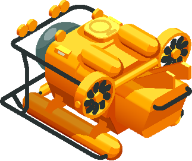
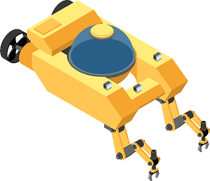

인터오션 소개
ABOUT INTEROCEAN
㈜인터오션 해양사업부는 잠수·해양장비의 공급과 제조, 기술지원을 통해 다양한 수중 활동과 작업을 지원합니다.
장비의 사용 목적과 현장 환경을 이해하고, 고객에게 필요한 제품과 지원 내용을 함께 검토합니다. 제품 공급부터 제작 상담, 운용교육과 점검·정비까지 현장에 필요한 지원을 이어갑니다.
사용자의 의견과 현장의 경험을 바탕으로 제품과 서비스의 완성도를 높여가겠습니다.
현장을 이해하고,
사용 목적에 맞는 장비를 제안합니다.
EQUIPMENT FOR YOUR OPERATING ENVIRONMENT
스쿠버·프리다이빙부터 국방·공공안전, 산업잠수까지 분야마다 필요한 장비와 운용 조건은 다릅니다.
인터오션은 사용 환경과 필요한 기능을 확인하고, 목적에 맞는 장비 구성을 상담합니다.
제품의 주요 사양과 활용 분야를 안내해 고객의 장비 선택을 돕습니다.

현장의 요구를
설계와 제작에 반영합니다.
FROM FIELD REQUIREMENTS TO PRODUCTION
사용자의 체형과 활동 목적, 운용 환경을 살펴 제작에 필요한 조건을 검토합니다. 확정된 사양을 바탕으로 소재와 부자재, 제작 방식과 마감 상태를 확인합니다.
제품을 사용하는 과정에서 확인되는 의견과 개선 과제를 설계와 제작에 반영합니다.

장비 도입 이후의
사용과 관리까지 함께합니다.
SUPPORT FOR OPERATION AND MAINTENANCE
장비를 이해하고 적절하게 관리하는 일은 지속적인 운용의 기본입니다.
인터오션은 장비 운용교육과 점검·정비, 잠수복 수선 상담을 통해 사용 중 필요한 지원을 안내합니다. 장비의 종류와 상태, 사용 이력을 확인하고 지원 가능한 범위와 절차를 설명합니다.
2023
-
05
의료기기 산업 발전기여 보건복지부 표창
2022
-
10
고압산소치료 연구센터 설립
-
08
고용노동부 대한민국 일자리 으뜸기업
-
07
경북도 제4회 문무대왕해양대상 해양산업 대상
-
04
친환경 소재 온열 기능성 잠수복 개발
-
03
기술혁신형 중소기업(INNO-BIZ) 인증
2021
-
03
부산 고용우수기업 선정
스포츠 선도기업 지정
동물 챔버 디자인 제품 개발
2020
-
04
음압병실 결합 올인원 고압산소치료챔버 개발
부산 예비챔프 우수기업
2019
-
12
지식재산 경영인증(특허청장)
-
10
감압챔버운영자 민간자격 등록(한국직업능력개발원)
-
04
글로벌 IP스타 기업 지정(한국발명진흥회)
-
03
모범납세자상(국세청장)
2018
-
12
부산벤처기업인상(부산광역시장)
-
02
우수체육용구 생산업체 지정(문체부)
2017
-
09
ISO 9001 인증
다중압력 통합시스템 챔버 개발
2016
-
05
벤처기업 인증
-
04
기술혁신형 중소기업(INNO-BIZ) 인증
2015
-
01
기업부설연구소 설립(인증)
Multiblace Chamber 2세대 개발
2013
-
06
국내 최초 다인용 고압산소 치료 챔버 개발
의료용 챔버 식약처 인증(GMP)
Multiblace Chamber 1세대 개발
2009
-
07
의료용 고압챔버 연구소·공장 설립
2008
-
03
서울지사 설립
2006
-
04
잠수복 공장 설립
-
02
산업 잠수 고압 챔버 개발
2003
-
01
법인 설립 및 상호 변경 (주)인터오션
1993
-
01
인터오션 창립